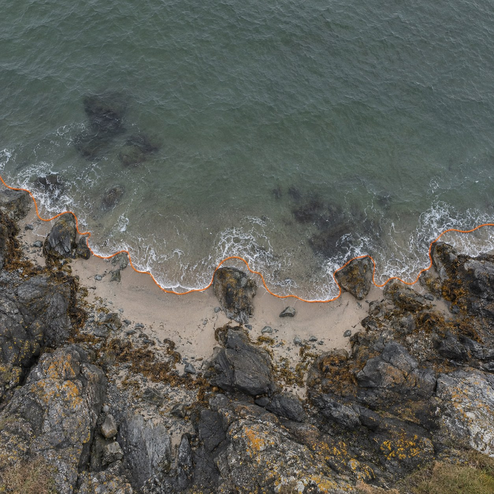
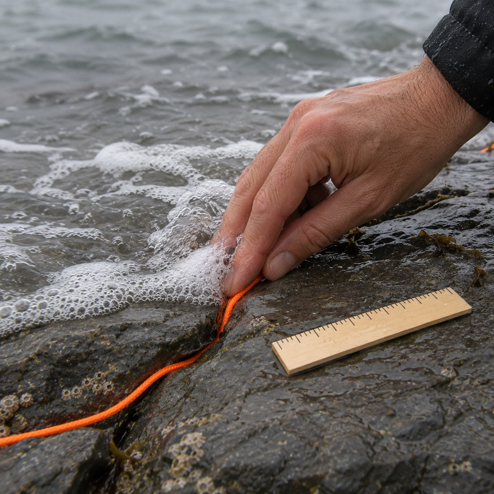

Four Lengths of One Shore


There is a small cove where dark rocks come down to the sea. I measured its shore four times.
First with a ten metre tape, pulled straight from point to point. The shore came to 212 metres. Then with a one metre rule, laid end over end along the edge: 318 metres. Then with a rule ten centimetres long, short enough to follow the smaller bends: 467 metres. Last with a thin cord, pressed by my fingers into every crack and around every stone: 731 metres.
None of these is wrong. Each shorter ruler finds bends the longer one stepped over, and every bend adds length. In 1967 Benoit Mandelbrot asked how long the coast of Britain is, and his answer, roughly, was that it depends on the ruler. Look closer and the edge grows, with no end in sight. Under the cord there were grains of sand, and the gaps between them.
So the cove has no length until someone decides how carefully to look. The number is not a fact about the rocks. It is a record of attention: how fine it was, how patient, where it chose to stop.
And the shore would not hold still. While I worked, the tide came in and the edge moved up the stones ahead of me. The last metres of cord went down along a line that had been dry when I began.
A machine measures with the step it was given. I can make my step as small as I like, which means I can make the cove as long as I like. What I cannot do is reach the end of it. Somewhere below the width of a fingertip I stopped, rolled up the cord, and the cove went back to being small enough to see in one look.